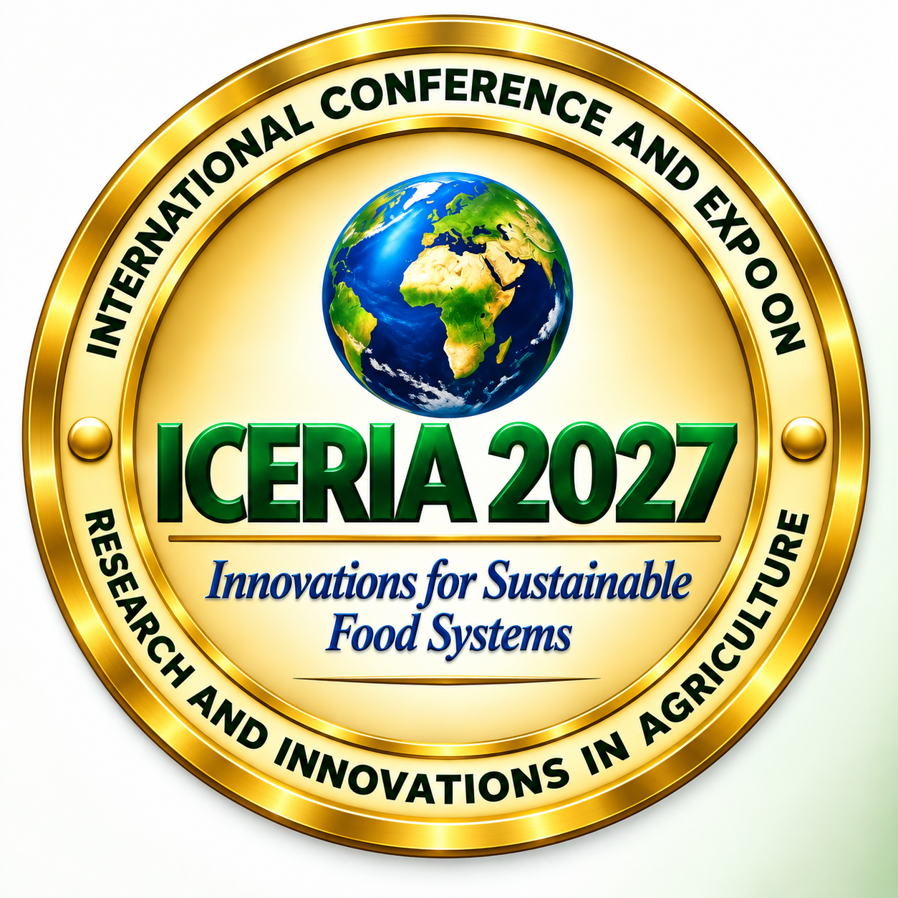
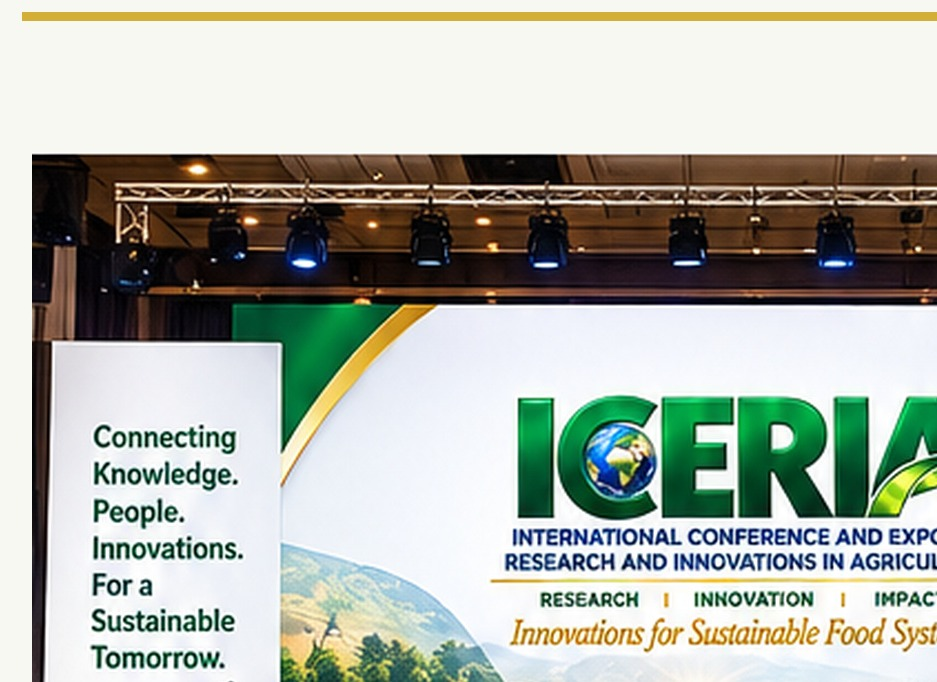

High-level dialogue
Keynotes, plenaries, expert panels and research presentations.

The current ICERIA edition at the Nigerian Institute of International Affairs (NIIA), Victoria Island, Lagos.
Date: Tuesday, 16 March 2027
Venue: Nigerian Institute of International Affairs (NIIA), 13/15 Kofo Abayomi Street, Victoria Island, Lagos, Nigeria.
Theme: CATALYSING COMMERCIALIZATION AND ADOPTION OF RESEARCH OUTCOMES AND INNOVATIONS FOR FOOD SUFFICIENCY AND ECONOMIC GROWTH OF AFRICA.
Partner With ICERIA →
ICERIA 2027 places particular emphasis on moving research outcomes beyond publication and demonstration toward practical use and scalable impact.
Keynotes, plenaries, expert panels and research presentations.
Research outcomes, products, technologies and enterprise solutions.
Research communication, resources and knowledge exchange.
Institutional collaboration, sponsorship and networking.